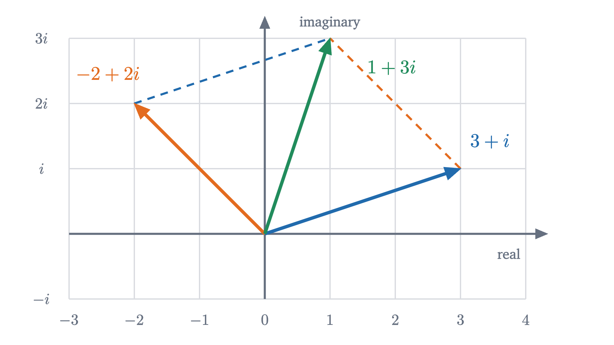
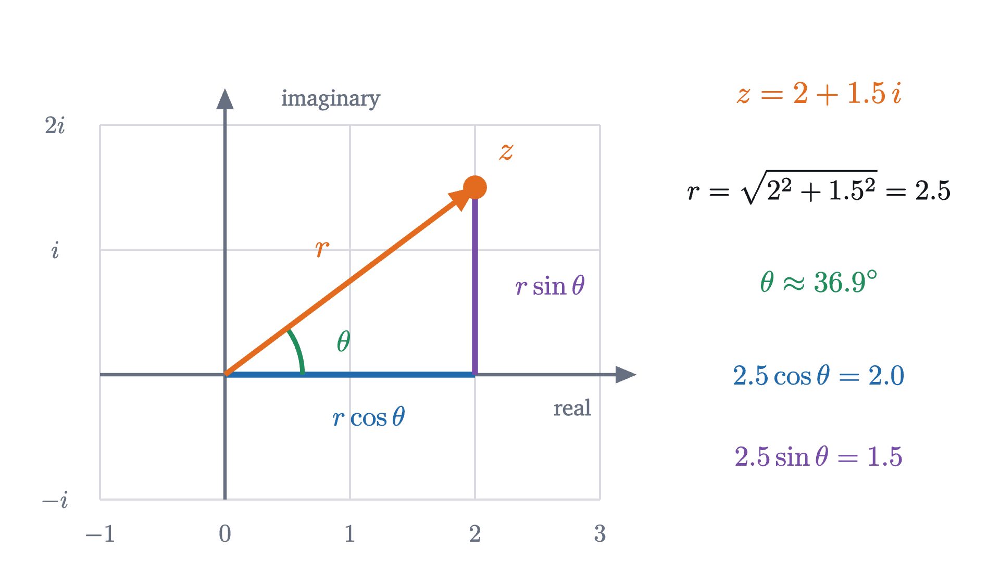
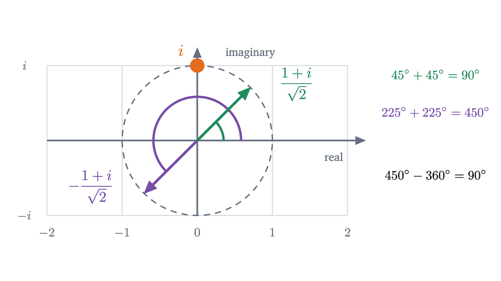

Complex numbers: why multiplying by i is a quarter turn
No number on the line squares to -1. Read multiplication by -1 as a half turn and the missing number appears: a quarter turn, which needs a second axis.
AssumesWhy is a negative times a negative positive?The unit circle: sine and cosine as coordinates
Square any number you know and the result is never negative. A positive number times itself is positive, a negative times a negative is positive, and $0^2 = 0$. So the equation $x^2 = -1$ has no solution, and a symbol $i$ with $i^2 = -1$ looks like a name for something that cannot exist.
Yet engineers compute with $i$ every day and get correct answers about real circuits and real waves. Either they are lucky, or “no number squares to $-1$” was only ever a statement about numbers on a line. This lesson shows that the second is the case, and it does so by answering a question that sounds unrelated: what does multiplying by $-1$ do to the number line?
Multiplication moves the number line
Take every number on the line and multiply it by 2. Each point moves to twice its distance from 0: the line is stretched, with 0 held fixed. Multiplying by $\frac12$ shrinks it. Multiplying by $-1$ does something of a different kind. It sends 1 to $-1$, 2 to $-2$ and $-3$ to 3: every point lands at its mirror image on the other side of 0. One way to carry the whole line to that position is to pin it at 0 and swing it through half a turn.
In this language, squaring a number means performing its motion twice, since $x^2 = x \cdot x \cdot 1$ is where 1 ends up after two applications. And $x^2 = -1$ asks:
Which motion, performed twice, is the half turn?
Run through the motions the real numbers offer. A stretch by 3 done twice is a stretch by 9. A flip done twice puts everything back. A flip with a stretch, like multiplying by $-3$, done twice is a stretch by 9 again, because the two flips cancel. No candidate works, and this is the old fact that squares are never negative, restated as a fact about motions.
Pause and try
Forget about numbers for a moment and think only about motions of a line pinned at 0, as in the animation above. What motion, done twice, is a half turn? Where does it put the point 1?
Show answerHide answer
A quarter turn. Two quarter turns make a half turn. A quarter turn (counterclockwise, say) carries the point 1 to a position one unit from 0 in the perpendicular direction, which is not on the number line at all.
So there is a motion whose square is the half turn, and it failed to show up among the real numbers for a simple reason: it carries the line off itself. If we want a number that produces this motion, it has to live at the place where the quarter turn puts 1, one unit above 0, and that requires a plane. We call that point $i$.
Numbers in the plane
Once one point off the line is a number, others follow. We should be able to multiply $i$ by 2, giving a point two units up, and to add 3 to that, moving three units to the right. The result, $3 + 2i$, is the point with coordinates $(3, 2)$. Every point $(a, b)$ of the plane gets a name $a + bi$ this way: go $a$ along the old number line and $b$ in the direction of $i$.

Addition is forced on us by the wish to keep ordinary algebra: $(a + bi) + (c + di) = (a + c) + (b + d)i$. Multiplication is forced in the same way. If the distributive law is to hold and $i \cdot i$ is to be $-1$, then
Pause and try
Compute $(2 + i)(1 + i)$ by this rule. Then find the distance from 0 of each of the three points $2 + i$, $1 + i$ and the product, using the Pythagorean theorem. Do you see a relation among the three distances?
Show answerHide answer
$(2 + i)(1 + i) = 2 + 2i + i + i^2 = 1 + 3i$. The distances are $\sqrt{2^2 + 1^2} = \sqrt5$, $\sqrt{1 + 1} = \sqrt2$ and $\sqrt{1 + 9} = \sqrt{10}$. And $\sqrt5 \times \sqrt2 = \sqrt{10}$: the distances multiply. We will prove that this always happens.
In what sense does i exist?
So far we have reasoned from a wish: if there were a number $i$ with $i^2 = -1$ obeying the usual laws, it would behave like this. A skeptic can reply that wishing proves nothing, and that assuming a contradiction lets you derive anything. The reply to the skeptic, due to William Rowan Hamilton in 1833, is to build the numbers out of things nobody doubts and to make the formulas above into definitions.
Nothing in this definition is assumed to exist beyond real numbers and pairs of them. Now compute with the multiplication rule, taking $a = 0, b = 1, c = 0, d = 1$:
So $i^2 = -1$ is a calculation, with no more mystery in it than $(0,1)$ being a point of the plane. Three things need checking before we may call these pairs numbers, and all three are routine.
- The pairs $(a, 0)$ behave exactly like the real numbers: $(a, 0) + (c, 0) = (a + c, 0)$ and $(a, 0)(c, 0) = (ac, 0)$. So the real numbers sit inside $\mathbb{C}$ as the horizontal axis, and nothing about them has changed.
- Addition and multiplication are commutative and associative, and multiplication distributes over addition. Each law is verified by expanding both sides with the definition. Commutativity of multiplication, for instance, holds because $ac - bd$ and $ad + bc$ are unchanged when $(a, b)$ and $(c, d)$ are swapped.
- Every complex number except 0 has a reciprocal (Problem 5 finds it), so division works.
That is the sense in which $i$ exists: as a point of the plane, in a number system that contains the real numbers and obeys the same laws of arithmetic. It is the same sense in which $-1$ or $\frac12$ exists. Each was once rejected as “not a real quantity”, and each is an addition to an older number system that keeps its rules and makes one more kind of equation solvable. The names “imaginary” and “real” are leftovers from the period of suspicion and carry no meaning now.
One thing was given up. The real numbers are ordered: of two different reals, one is larger. No ordering of the complex numbers is compatible with their arithmetic (Problem 7), so it makes no sense to ask whether $i$ is positive, or whether $2 + i$ is bigger than $1 + 3i$.
Multiplying by i is a quarter turn
We placed $i$ where a quarter turn puts 1. Now that multiplication is defined, we can check that multiplying by $i$ gives a quarter turn of everything. For any $a + bi$,
So the point $(a, b)$ goes to $(-b, a)$. For example, $2 + i$ goes to $-1 + 2i$.
Two checks confirm that $(a, b) \mapsto (-b, a)$ is a quarter turn about 0. The distance from 0 is unchanged, since $(-b)^2 + a^2 = a^2 + b^2$. And the direction has turned through a right angle: when $a$ and $b$ are not zero, the line from 0 to $(a, b)$ has slope $\frac{b}{a}$ and the line from 0 to $(-b, a)$ has slope $-\frac{a}{b}$, and two lines whose slopes multiply to $-1$ are perpendicular (when $a$ or $b$ is zero the two points lie on different axes). The turn is counterclockwise because 1 goes to $i$, which is up. The theorem of the next section will contain all of this as a special case.
Pause and try
The powers of $i$ repeat with period 4. What is $i^{2026}$?
Show answerHide answer
$2026 = 4 \times 506 + 2$, so $i^{2026} = (i^4)^{506} \cdot i^2 = 1 \cdot (-1) = -1$. In terms of turns: 2026 quarter turns are 506 full turns and one half turn.
Multiplying by any complex number: turn and stretch
If multiplying by $i$ turns the plane, what does multiplying by $1 + i$ do? We saw one data point: it took $2 + i$, at distance $\sqrt5$ from 0, to $1 + 3i$, at distance $\sqrt{10}$. Here is a whole shape multiplied by $1 + i$, one point at a time.
The shape has turned through $45^\circ$ and grown by a factor of about $1.41$, and those are the direction and the distance of the point $1 + i$ itself. To state what is going on we need names for the distance and the direction of a complex number.
Recall from the unit circle that $(\cos\theta, \sin\theta)$ is the point reached by turning $(1, 0)$ about the origin through the angle $\theta$, counterclockwise. The definition says that $z$ lies in that direction, at distance $|z|$. An argument always exists, because $\left(\frac{a}{|z|}, \frac{b}{|z|}\right)$ is at distance 1 from 0 and every point of the unit circle is $(\cos\theta, \sin\theta)$ for some $\theta$. It is not unique: adding $360^\circ$ gives another argument of the same number. Those are the only other arguments, because two angles give the same point of the unit circle only when they differ by a whole number of full turns. We write $\arg z$ for an argument of $z$, so a statement such as $\arg z = 30^\circ$ is to be read up to multiples of $360^\circ$. The number 0 has modulus 0 and no argument, since it has no direction.

With these words the observation about $1 + i$ becomes a theorem about all complex numbers.
Part 1 is proved completely. Part 2 rests on the angle addition formulas, which are theorems of trigonometry, valid for all angles, that we are citing and not proving. The lesson on angle addition proves them from the fact that a rotation preserves distances, an argument that makes no use of complex numbers, so nothing circular is going on. They are also believable on their face: they say what the coordinates of a point on the unit circle become after it is turned through a further angle.
Division undoes multiplication, so it divides moduli and subtracts arguments. To see this, let $z \neq 0$ and let $q = \frac{w}{z}$, the number with $qz = w$ (it exists because $z$ has a reciprocal, found in Problem 5). Part 1 gives $|q|\,|z| = |w|$, so $|q| = \frac{|w|}{|z|}$. If $w \neq 0$ and $\gamma$ is an argument of $q$, part 2 says $\gamma + \alpha$ is an argument of $w$, so it differs from $\beta$ by full turns, and therefore $\beta - \alpha$ is an argument of $q$.
Re-read the opening in this light. The number $i$ has modulus 1 and argument $90^\circ$, so multiplying by it stretches by 1 and turns by $90^\circ$: a quarter turn. Then $i^2$ has modulus $1 \times 1$ and argument $90^\circ + 90^\circ = 180^\circ$, and the number of modulus 1 at $180^\circ$ is $-1$. A negative real number has argument $180^\circ$, and “negative times negative is positive” is the statement $180^\circ + 180^\circ = 360^\circ$.
Worked examples

The last two examples are instances of a theorem far beyond this lesson, the fundamental theorem of algebra: every polynomial equation of degree at least 1 with complex coefficients has a solution in $\mathbb{C}$. It was first proved, in several ways, in the early nineteenth century by Gauss and Argand among others, and we only cite it; the lesson on polynomials and their roots says what it implies. It means that the step from the line to the plane never has to be repeated.
Pause and try
A number $z$ has modulus 2 and argument $60^\circ$. Predict the modulus and argument of $z^2$, write $z^2$ in the form $a + bi$, and then check by squaring $z = 1 + \sqrt3\,i$ directly.
Show answerHide answer
Modulus $2 \times 2 = 4$ and argument $60^\circ + 60^\circ = 120^\circ$, so $z^2 = 4(\cos 120^\circ + i \sin 120^\circ) = -2 + 2\sqrt3\,i$. Directly: $(1 + \sqrt3\,i)^2 = 1 + 2\sqrt3\,i + 3i^2 = -2 + 2\sqrt3\,i$.
Where care is needed
Two limits of the theorem are worth stating. First, it concerns multiplication only. Moduli do not add when numbers are added: $|1 + i| = \sqrt2$, while $|1| + |i| = 2$. Second, “arguments add” is a statement about angles, which are only determined up to full turns. The numbers at $200^\circ$ and $250^\circ$ on the unit circle have a product at $450^\circ$, which is the same direction as $90^\circ$.
Stepping back: the hard part was to stop asking which number on the line squares to $-1$ and to ask instead what multiplication by $-1$ does. Once multiplication is seen as a motion, a quarter turn is an obvious thing to want, the plane is the obvious place to find it, and Hamilton’s pairs show that the wish can be granted without assuming anything. The idea to keep is that a complex number is a stretch together with a turn. In the next lesson that idea meets the number $e$, and explains why $e^{i\pi} = -1$.
Check yourself
The number $z$ has modulus 2 and argument $100^\circ$, and $w$ has modulus 3 and argument $50^\circ$. What are the modulus and an argument of $zw$?
Problems
Work these on paper, plotting the numbers as you go, before opening the solutions. The first three repeat the lesson’s moves, the next three combine them, and the last two go further.
Problem 1
Let $z = 3 + 2i$ and $w = 1 - 5i$. Compute $z + w$, $zw$, and $iz$. Plot $z$ and $iz$ and confirm the quarter turn.
Show solutionHide solution
$z + w = 4 - 3i$. $zw = 3 - 15i + 2i - 10i^2 = 3 - 13i + 10 = 13 - 13i$. $iz = 3i + 2i^2 = -2 + 3i$. The points $(3, 2)$ and $(-2, 3)$ are both at distance $\sqrt{13}$ from 0, and the slopes $\frac23$ and $-\frac32$ multiply to $-1$, so the directions are perpendicular.
Problem 2
Find $|3 - 4i|$ and $|1 + 2i|$. Multiply the two numbers and verify that $|zw| = |z||w|$.
Show solutionHide solution
$|3 - 4i| = \sqrt{9 + 16} = 5$ and $|1 + 2i| = \sqrt5$. The product is $(3 - 4i)(1 + 2i) = 3 + 6i - 4i - 8i^2 = 11 + 2i$, with modulus $\sqrt{121 + 4} = \sqrt{125} = 5\sqrt5$, which is $5 \times \sqrt5$.
Problem 3
Simplify $i^{7}$, $i^{100}$ and $i + i^2 + i^3 + i^4$.
Show solutionHide solution
Powers of $i$ repeat every 4. $7 = 4 + 3$, so $i^7 = i^3 = -i$. $100 = 4 \times 25$, so $i^{100} = 1$. The sum is $i + (-1) + (-i) + 1 = 0$: the four points are the corners of a square centered at 0, and they balance.
Problem 4
Solve $x^2 - 4x + 13 = 0$ and check one of your solutions by substitution.
Show solutionHide solution
Complete the square: $x^2 - 4x + 4 = -9$, so $(x - 2)^2 = -9$. The numbers whose square is $-9$ are $\pm 3i$, so $x = 2 + 3i$ or $x = 2 - 3i$. Check $x = 2 + 3i$: $x^2 = 4 + 12i + 9i^2 = -5 + 12i$, and $-5 + 12i - 4(2 + 3i) + 13 = -5 + 12i - 8 - 12i + 13 = 0$.
Problem 5
For $z = a + bi$, the conjugate of $z$ is $\bar z = a - bi$. (a) Show that $z\bar z = |z|^2$. (b) Deduce that every $z \neq 0$ has a reciprocal, and find it. (c) Use this to compute $\dfrac{5 + 5i}{1 + 2i}$, and check by multiplying back.
Show solutionHide solution
(a) $(a + bi)(a - bi) = a^2 - abi + abi - b^2i^2 = a^2 + b^2 = |z|^2$. (b) If $z \neq 0$ then $|z|^2 > 0$, and dividing (a) by it gives $z \cdot \frac{\bar z}{|z|^2} = 1$. So $\frac1z = \frac{a - bi}{a^2 + b^2}$. (c) Multiply numerator and denominator by the conjugate of the denominator: $\frac{(5 + 5i)(1 - 2i)}{(1 + 2i)(1 - 2i)} = \frac{5 - 10i + 5i - 10i^2}{5} = \frac{15 - 5i}{5} = 3 - i$. Check: $(3 - i)(1 + 2i) = 3 + 6i - i - 2i^2 = 5 + 5i$.
Problem 6
Compute $(1 + i)^8$ in two ways: with moduli and arguments, and by repeated squaring.
Show solutionHide solution
$1 + i$ has modulus $\sqrt2$ and argument $45^\circ$. So $(1 + i)^8$ has modulus $(\sqrt2)^8 = 2^4 = 16$ and argument $8 \times 45^\circ = 360^\circ$, which is the direction of the positive real axis: $(1 + i)^8 = 16$. By squaring: $(1 + i)^2 = 1 + 2i + i^2 = 2i$; then $(2i)^2 = -4$; then $(-4)^2 = 16$.
Problem 7
Suppose the nonzero complex numbers could be divided into “positive” and “negative” ones so that (i) for every $z \neq 0$ exactly one of $z$ and $-z$ is positive, and (ii) the product of two positive numbers is positive. Show that this is impossible. (These two properties hold for the real numbers and are the basis of all work with inequalities.)
Show solutionHide solution
By (i), either $i$ or $-i$ is positive. If $i$ is positive, then by (ii) $i \cdot i = -1$ is positive. If $-i$ is positive, then $(-i)(-i) = i^2 = -1$ is positive. Either way $-1$ is positive. Applying (ii) again, $(-1)(-1) = 1$ is positive. Now both $1$ and $-1$ are positive, which contradicts (i). So no such division exists, and there is no ordering of $\mathbb{C}$ that works with multiplication the way the ordering of the real numbers does.
Problem 8
Find all complex numbers $z$ with $z^3 = 1$, using moduli and arguments. Write them in the form $a + bi$ and verify one of the non-real ones by algebra.
Show solutionHide solution
If $z^3 = 1$ then $|z|^3 = 1$, and $|z|$ is a nonnegative real number, so $|z| = 1$. If $\theta$ is an argument of $z$, then $3\theta$ is an argument of 1, so $3\theta$ is a multiple of $360^\circ$ and $\theta$ is a multiple of $120^\circ$. That gives three different points on the unit circle, at $0^\circ$, $120^\circ$ and $240^\circ$ (the next, $360^\circ$, is the first again):
Conversely each of these has modulus 1 and an argument whose triple is a multiple of $360^\circ$, so its cube is 1. Check the second by algebra: its square is $\frac14 - \frac{\sqrt3}{2}i + \frac34 i^2 = -\frac12 - \frac{\sqrt3}{2}i$, and multiplying by $-\frac12 + \frac{\sqrt3}{2}i$ gives $\frac14 - \frac34 i^2 = \frac14 + \frac34 = 1$. The three cube roots of 1 are the corners of an equilateral triangle.